التأكيد على الالتزام بطابور الصباح في تمام 7:00 صباحاً
تهيب مديرة المدرسة الأستاذة رباب البشلاوي بجميع الطلاب الحضور مبكراً قبل طابور الصباح للاستفادة من الإذاعة المدرسية وتحية العلم.
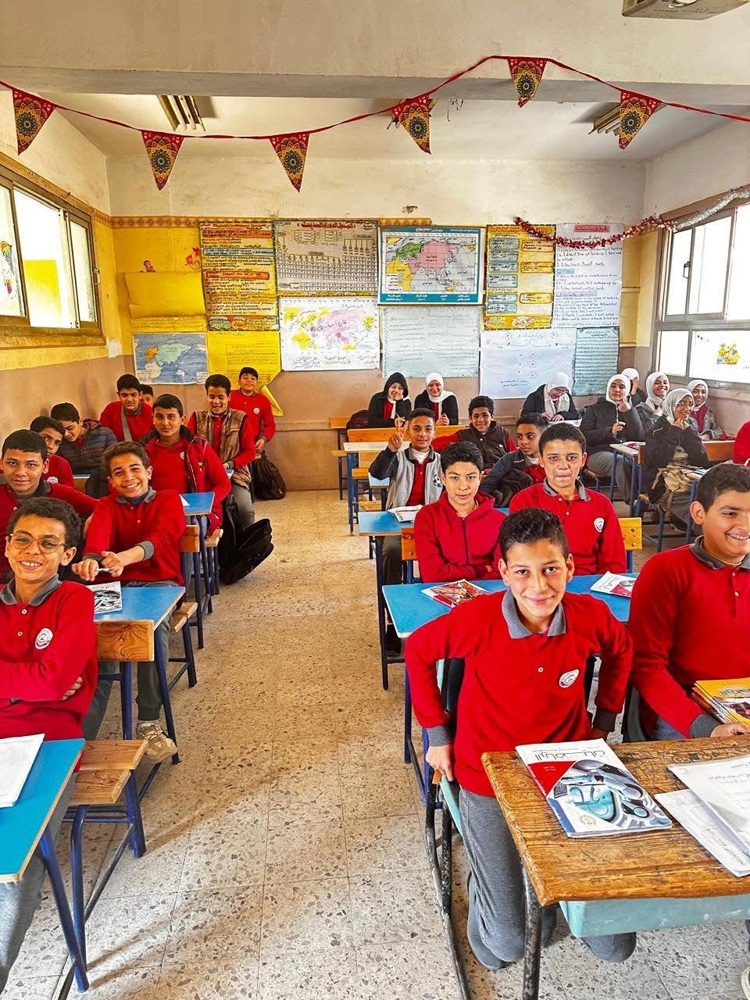
نغرس القيم ونبني قادة المستقبل في بيئة تعليمية رائدة، ترعى التفوق الأكاديمي وتُسلّح أبناءنا وبناتنا بمهارات العصر الرقمي وعلوم الذكاء الاصطناعي في المرحلة الإعدادية.
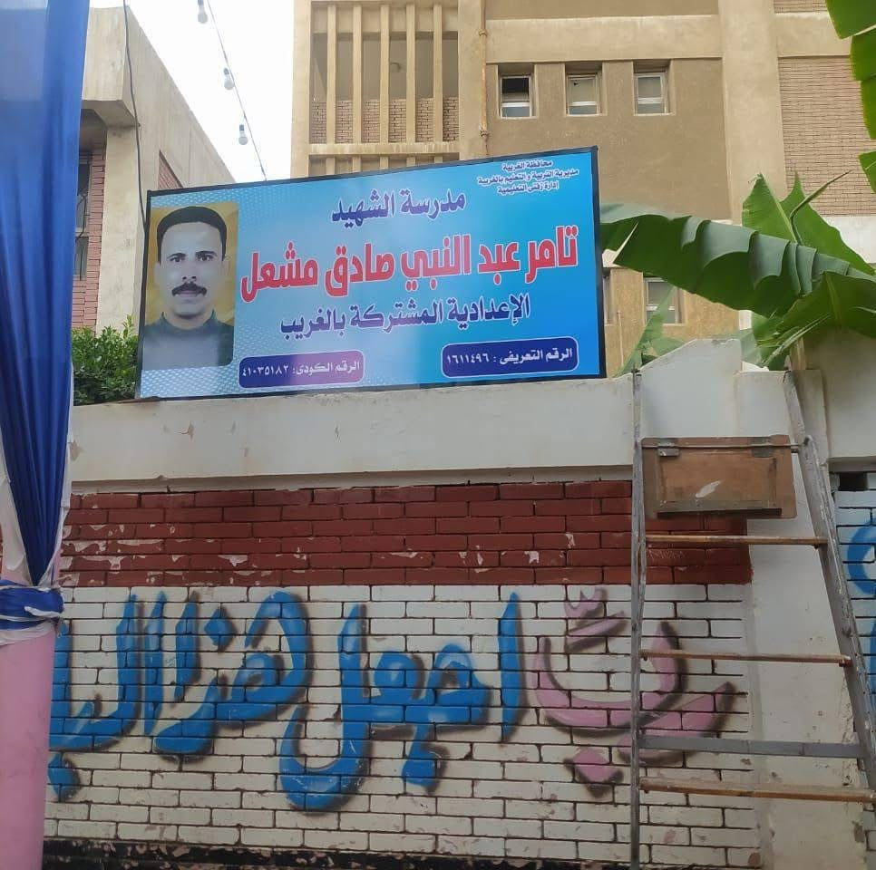
ابن محافظة الغربية البار، الذي روى بدمائه الزكية تراب الوطن الغالي دفاعاً عن عزته وأمنه وسلامة مواطنيه. تفخر مدرستنا بحمل اسمه الشريف تخليداً لبطولته العطرة، ليكون رمزاً حياً وقدوة ملهمة لجميع أبنائنا وبناتنا الطلاب في الانتماء، والتضحية، والوفاء لمصرنا الحبيبة.
نعمل كفريق عمل واحد في قرية الغريب بمركز زفتى لنصنع بيئة تعليمية تجمع بين الانضباط الأخلاقي والتميز العلمي والتطبيقي.
أن تكون مدرسة الشهيد تامر مشعل نموذجاً رائداً في التعليم الإعدادي بمحافظة الغربية، عبر إعداد جيل واعٍ متفوق دراسياً، متمكن من التكنولوجيا الحديثة وأدوات الذكاء الاصطناعي، ومتمسك بالقيم الوطنية والأخلاقية.
توفير مناخ تعليمي آمن وداعم، وتنمية المهارات الفكرية والنقدية والعملية للطلاب من خلال هيئة تدريس متميزة، ومتابعة نفسية واجتماعية حثيثة، وأنشطة متنوعة تشمل المسرح، الفن، الرياضة، والحاسب الآلي.
فريق إداري وإرشادي حريص على متابعة كل طالب وتوفير بيئة تربوية ونفسية متكاملة تضمن راحة الطلاب وأولياء الأمور.
قيادة تربوية حكيمة تسعى للارتقاء بالمستوى التعليمي والانضباط المدرسي، وتفعيل الشراكة الإيجابية والمستمرة مع أولياء الأمور والمجتمع المحلي.
الإشراف على تنظيم شؤون الطلاب، والجداول المدرسية، ومتابعة الانضباط اليومي وطابور الصباح، وضمان سير العملية التعليمية بأعلى كفاءة.
تقديم الدعم والإرشاد النفسي للطلاب، ومساعدتهم في التغلب على قلق الامتحانات، وتعديل السلوك وتنمية الثقة بالنفس والدافعية للتفوق.
إعداد الأبحاث الاجتماعية، ورعاية الحالات المستحقة، ومتابعة المواظبة اليومية، وحل المشكلات الطلابية، وتنظيم الرحلات والأنشطة الاجتماعية.
نخبة متميزة من المعلمين الأكفاء المخلصين الذين يقدمون المناهج الدراسية الحديثة بأساليب تعليمية تفاعلية.
صفوف دراسية مصممة للمرحلة الإعدادية المشتركة، مع منظومة أنشطة تفاعلية تصقل شخصية الطالب وتبني مهاراته.
مرحلة الانتقال والتهيئة الأكاديمية مع تقديم اللغة الثانية، ومناهج العلوم والرياضيات المتطورة، والتدريب على مهارات البحث والتفكير النقدي.
تعميق المعارف وتطوير الاستيعاب المفاهيمي، وحل المشكلات في الهندسة والجبر، والانخراط الواسع في الأنشطة الثقافية والمسرحية.
سنة التتويج والتأهيل للتفوق في الشهادة الإعدادية والتنسيق لمدارس المتفوقين (STEM) والثانوي العام والفني المتميز مع فصول مراجعة مجانية.
تحت إشراف الأستاذ محمد بدر؛ تدريب الطلاب على الخطابة، والشعر، والتمثيل المسرحي، وبناء الشخصية القيادية على خشبة المسرح.
تحت إشراف الأستاذة فاطمة سعيد؛ صقل مواهب الرسم واللوحات الزيتية والأشغال اليدوية والمعارض المدرسية السنوية.
تحت إشراف أ. سالم و أ. شيماء؛ دوريات كرة القدم، وكرة الطائرة، والجمباز، وتمارين طابور الصباح اليومية لتنشيط الجسم والعقل.
تحت إشراف الأستاذة همت؛ ورش مهارات الحياة اليومية، الطهي الصحي، التفصيل والتطريز، والتنظيم المالي الأسري للطالبات.
تحت إشراف الأستاذة جيهان مشغل؛ معمل كمبيوتر مجهز لتدريب الطلاب على تكنولوجيا المعلومات، الـ ICT، وتطبيقات الذكاء الاصطناعي.
مكتبة متكاملة تضم أمهات الكتب والموسوعات وقصص اليافعين، مع مسابقات أسبوعية في التلخيص والإذاعة الصباحية المدرسية.
لقطات حقيقية من فصولنا المشرقة ومكتبتنا وفنائنا المدرسي تعكس بهجة التعلم وروح العائلة في مدرسة الشهيد تامر مشعل.
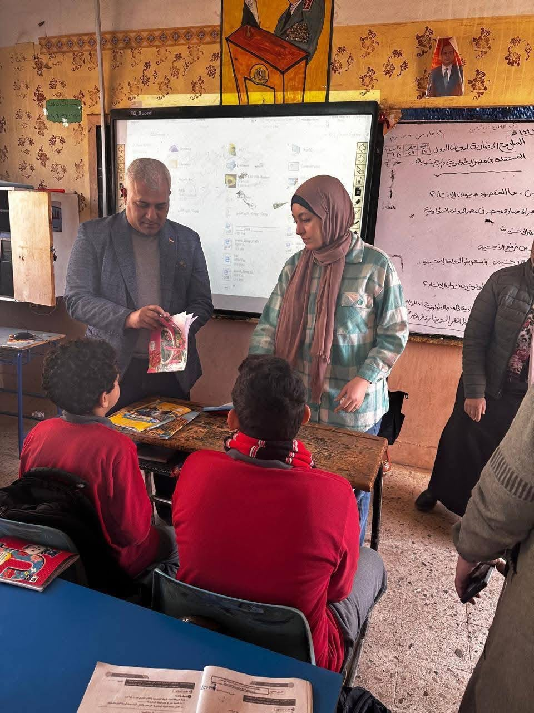
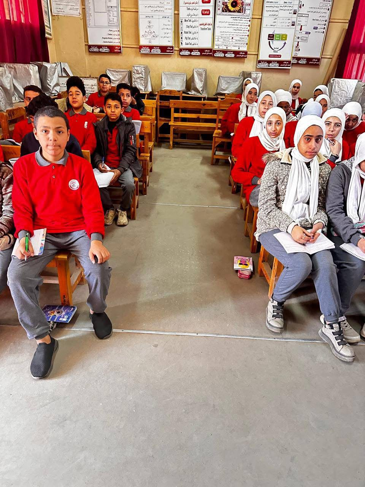
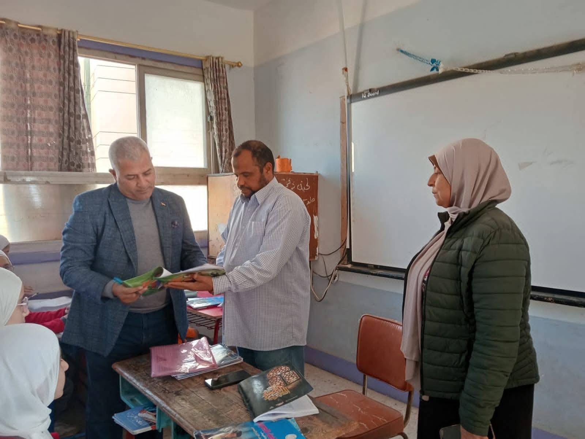
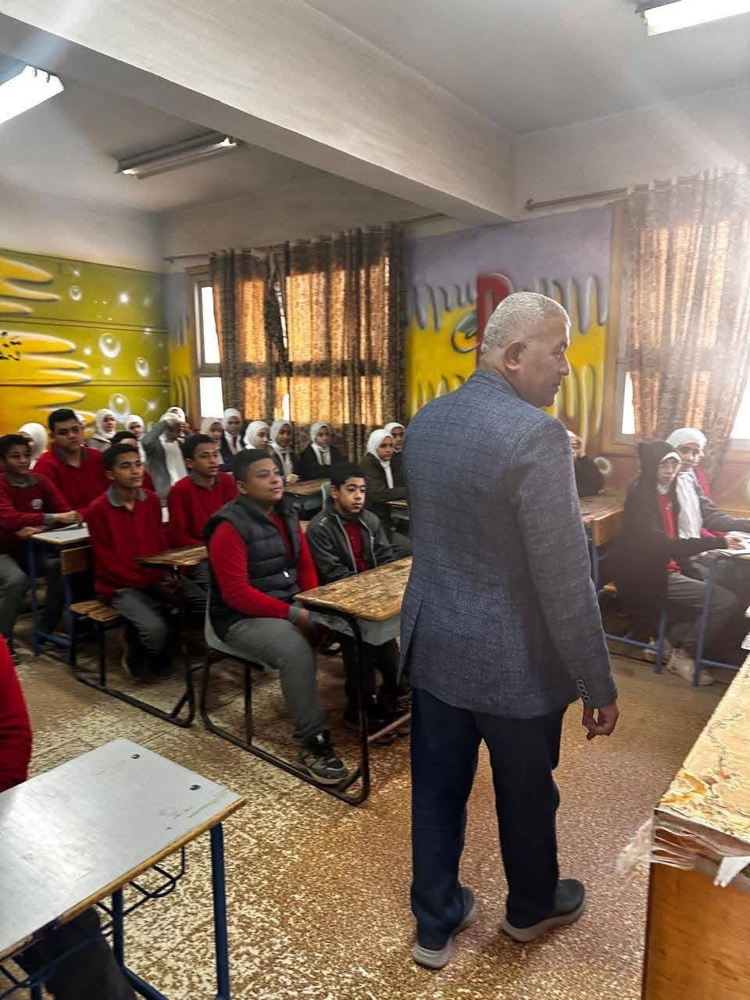
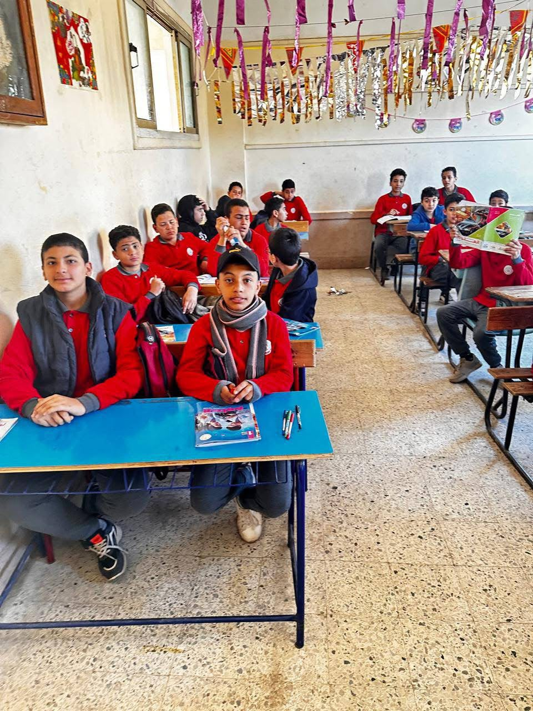
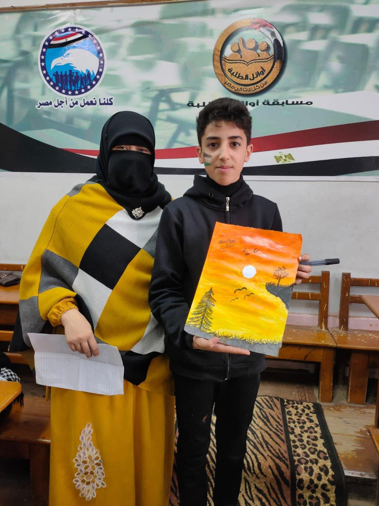
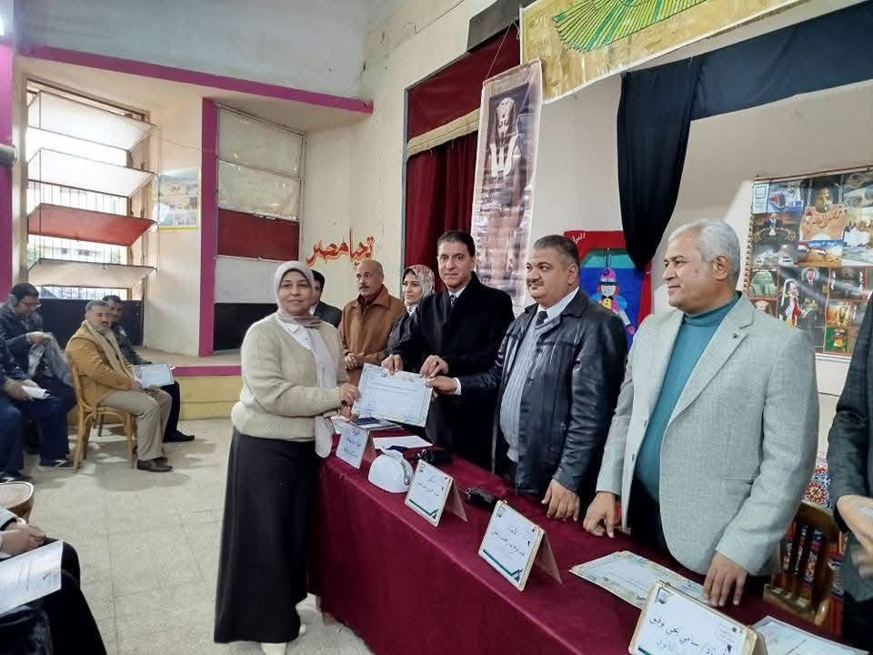
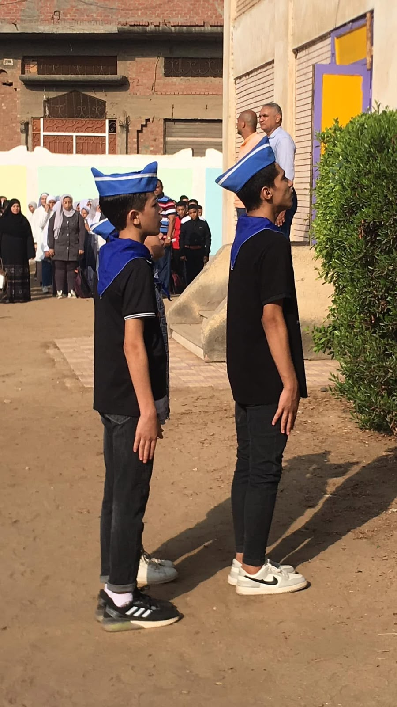
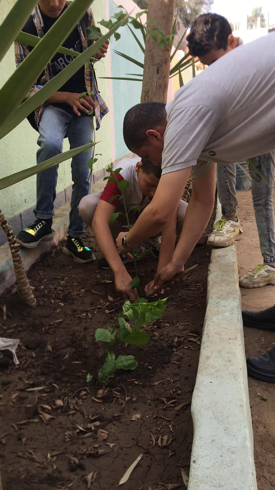
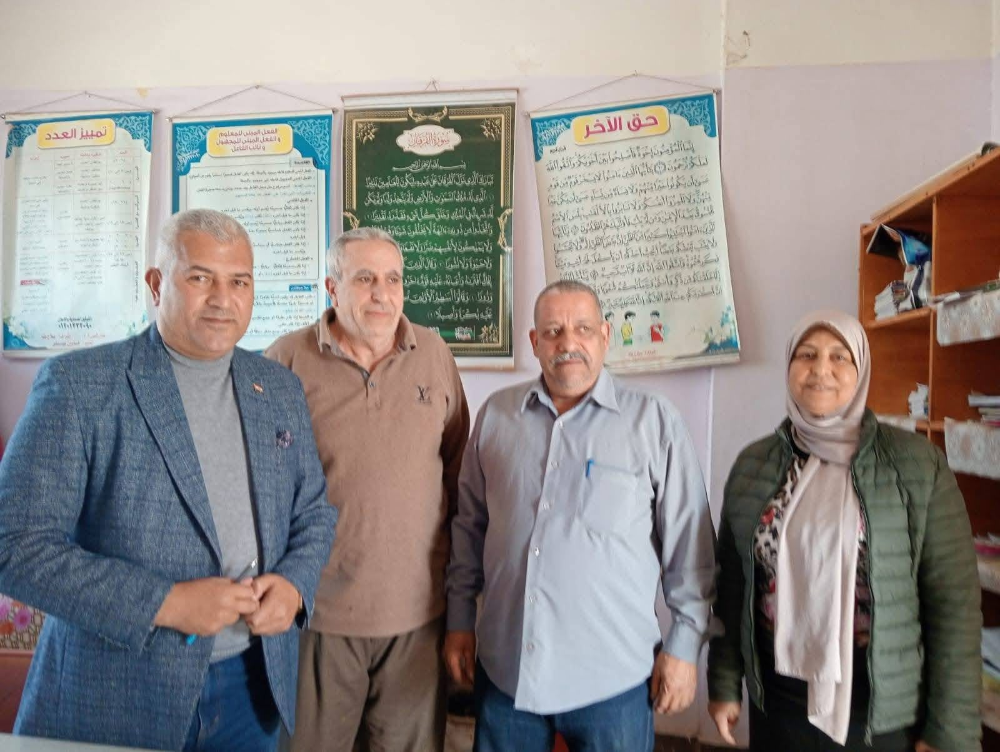
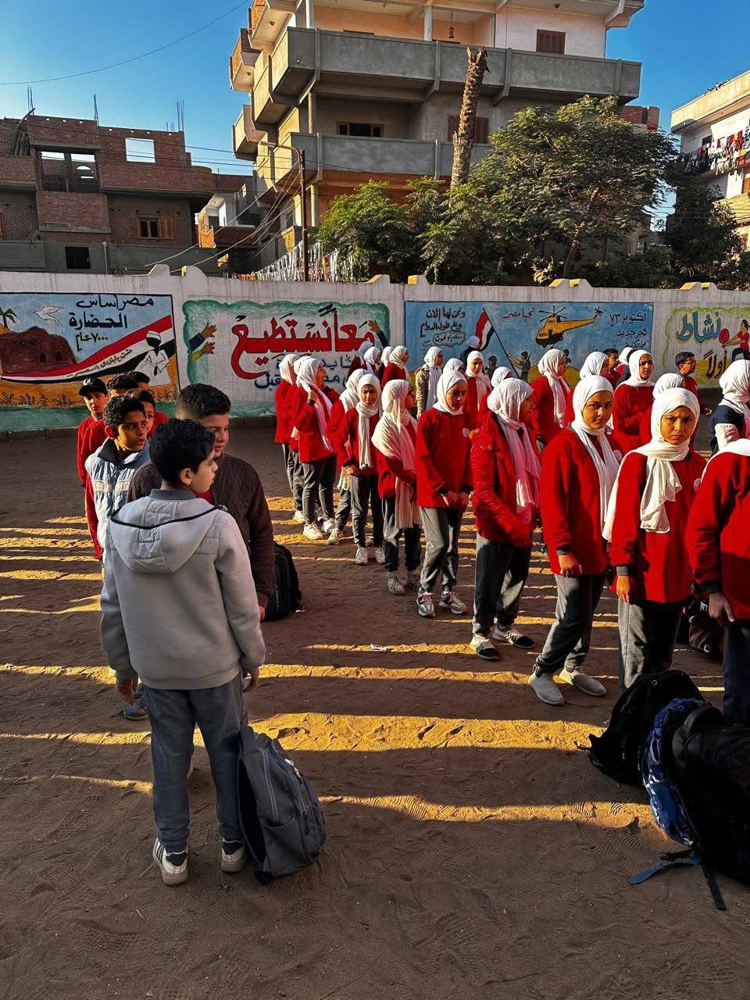
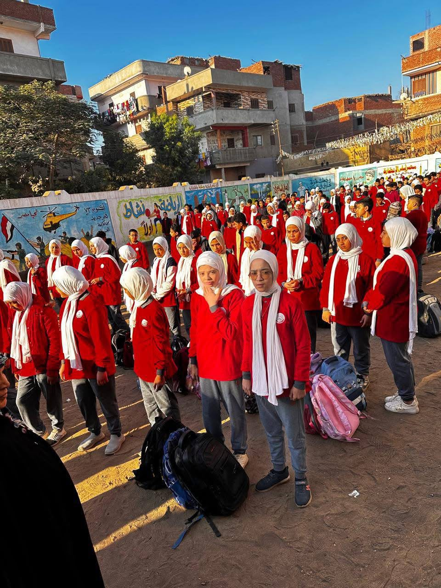
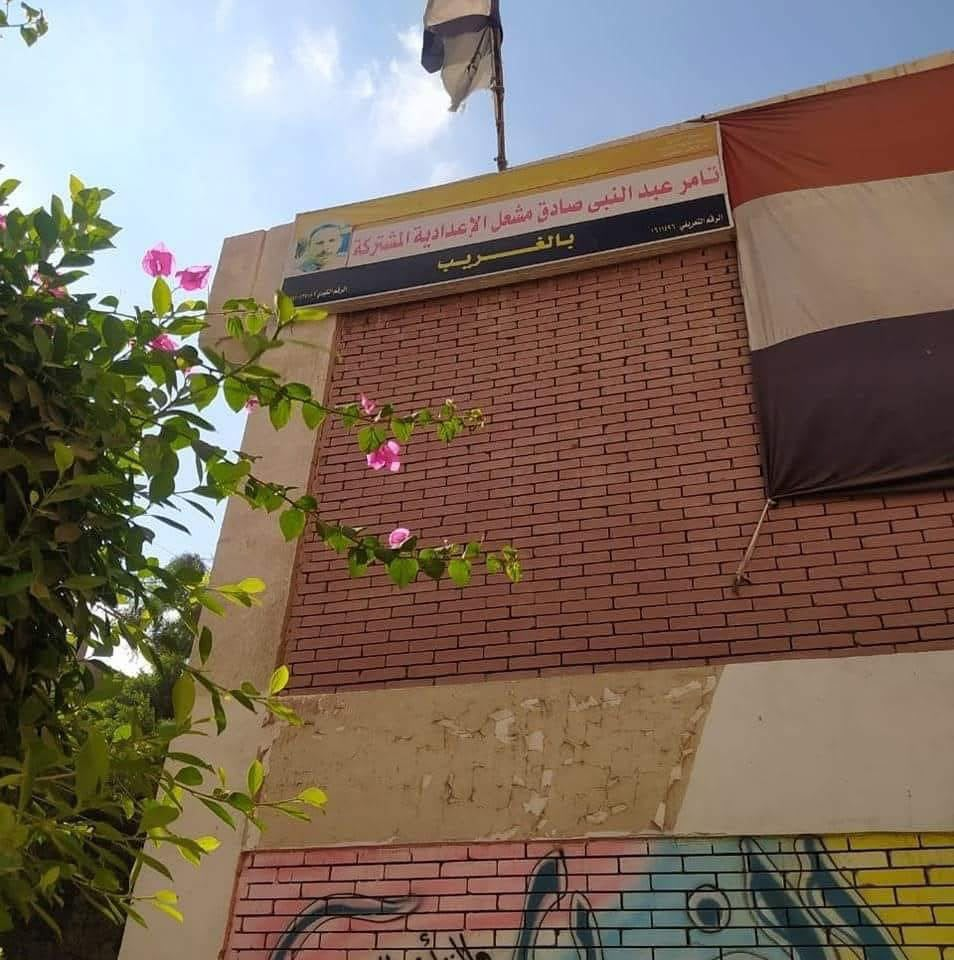
تابع مواعيد الفعاليات المدرسية وجداول امتحانات الشهور ونصف العام والشهادة الإعدادية أولاً بأول.
أدخل رقم الجلوس لمعرفة نتيجة الامتحانات فور اعتمادها رسمياً:
تهيب مديرة المدرسة الأستاذة رباب البشلاوي بجميع الطلاب الحضور مبكراً قبل طابور الصباح للاستفادة من الإذاعة المدرسية وتحية العلم.
تعلن الأخصائية الاجتماعية الأستاذة غادة مجدي عن استقبال أوراق الحالات المستحقة للإعفاء وفق القرارات الوزارية بمكتب الخدمة الاجتماعية.
بالتعاون مع مسؤولة الحاسب الآلي أ. جيهان مشغل، يمكن لجميع الطلاب تجربة بناء المواقع بالذكاء الاصطناعي مجاناً عبر المنصة الرقمية.
قصص نجاح تثبت أن البيئة التربوية المخلصة في مدرسة الشهيد تامر مشعل قادرة على صناعة الفارق وتخريج الأوائل.
حصد فريق المسرح المدرسي بقيادة أ. محمد بدر المركز الأول في مهرجان الإلقاء والمسرح المدرسي بإدارة زفتى التعليمية.
حقق 18 طالباً وطالبة من أبناء المدرسة الدرجات النهائية في امتحانات الشهادة الإعدادية مع التحاقهم بمدارس المتفوقين.
نيل شهادة التميز من توجيه التربية الفنية بالغربية للأعمال واللوحات التشكيلية بإشراف أ. فاطمة سعيد.
إليك الإجابات المعتمدة عن أكثر التساؤلات المتكررة بخصوص مواعيد المدرسة، الزي، والأنشطة والتحويلات.
يبدأ طابور الصباح المدرسي يومياً في تمام الساعة 7:00 صباحاً، وتبدأ الحصة الأولى فور انتهاء الطابور والإذاعة الصباحية، وينتهي اليوم الدراسي في تمام الساعة 1:30 مساءً من الأحد إلى الخميس.
تقع المدرسة في قرية الغريب - مركز زفتى - محافظة الغربية، بجوار محطة المياه مباشرة. ويسهل الوصول إليها من خلال طريق زفتى - الغريب، ويمكنكم التواصل هاتفياً على الرقم: 12345678 لأي إرشادات للموقع.
تخصص إدارة المدرسة (الأستاذة رباب البشلاوي والأستاذة هبه بلبول) يومي الإثنين والأربعاء من كل أسبوع من الساعة 11:30 صباحاً حتى الساعة 1:00 ظهراً لاستقبال السادة أولياء الأمور ومناقشة أي استفسارات تخص أبناءهم دون تعطيل الحصص.
تتولى الأخصائية النفسية (أ. خديجة النويهي) تقديم الاستشارات السلوكية ودعم الطلاب في مواجهة قلق الامتحانات وتنمية الثقة، بينما تتولى الأخصائية الاجتماعية (أ. غادة مجدي) بحث المشكلات المدرسية، وحالات الإعفاء الاجتماعي، ومتابعة الغياب وتنظيم الأنشطة والرحلات.
المختبر متاح مجاناً 100% داخل هذا الموقع ويعمل بدون إنترنت أو أي مفاتيح خارجية! يمكن للطالب تجربة كتابة الأوامر (Prompts)، وحل الألعاب البرمجية، وجمع النقاط والشارات حتى الحصول على شهادة إتمام المسار وطباعتها.
رحلتك التفاعلية لبناء موقع أحلامك باستخدام أدوات الذكاء الاصطناعي — بدون كود معقد، وبمحاكاة محلية ذكية تحفظ تقدمك!
اضغط على كل مرحلة لتعرف خطوتك القادمة واكسب نقاط XP فورية!
كل موقع عظيم يبدأ بفكرة بسيطة! تعلّم كيف تخبر الذكاء الاصطناعي بنوع الموقع، والهدف منه، والجمهور الذي تريد مخاطبته بكلمات عربية واضحة ومباشرة.
اكتب وصف الموقع وشاهد النتيجة تظهر فورياً في شاشة المعاينة الحية بدون أي إنترنت أو API خارجي!
العب وتعلّم واكسب نقاط XP وشارات جديدة لسجلك البرمجي!
اضغط على الوسوم بالترتيب الصحيح من الأعلى إلى الأسفل داخل الصندوق:
شارات تفتحها كلما حققت إنجازاً جديداً في المختبر:
نماذج لمواقع صنعها زملاؤك في المدرسة باستخدام محاكي الـ AI:
نصائح ذهبية تحميك وتحمي بياناتك أثناء استكشاف عالم الذكاء الاصطناعي:
لا تشارك أبداً اسمك الكامل، عنوان بيتك، رقم هاتفك الشخصي، أو كلمات مرورك مع أي شات بوت أو أداة ذكاء اصطناعي.
الذكاء الاصطناعي قد يخطئ أحياناً! راجع دائماً المعلومات الدراسية والعلمية مع معلمك والكتب المعتمدة قبل الاعتماد عليها.
استخدم أدوات الذكاء الاصطناعي لتطوير أفكارك الخاصة وليس لنسخ أعمال زملائك دون إذن أو نسب الفضل لأصحابه.
اجعل إبداعك وسيلة لنشر الخير والمعرفة، وامتنع عن توليد أي محتوى قد يسيء لزملائك أو لمدرستك.
أبوابنا مفتوحة دائماً لأولياء الأمور والطلاب للإجابة على كافة الاستفسارات وتقديم كل سبل الدعم.
يمكنك زيارة المدرسة في مواعيد العمل الرسمية أو التواصل معنا هاتفياً أو عبر الرسائل الإلكترونية:
قرية الغريب، مركز زفتى، محافظة الغربية (بجوار محطة المياه مباشرة).
من الأحد إلى الخميس: من 7:00 صباحاً حتى 1:30 مساءً (الجمعة والسبت عطلة).
سيقوم فريق العلاقات المدرسية بالرد عليك خلال ساعات العمل الرسمية: